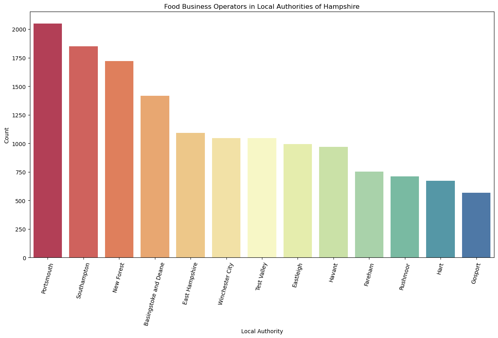
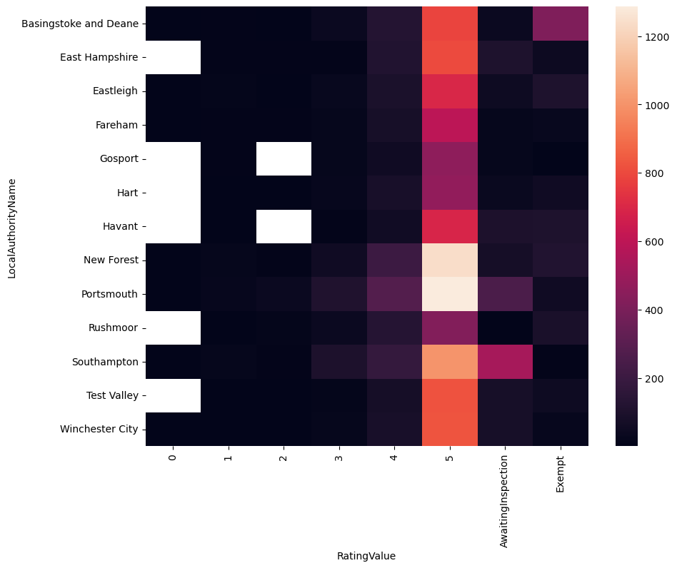

Food Hygeine ratings in Hampshire
This project involves Data cleansing, Exploration and visualization in Python.
This project encompasses data cleansing, exploration, and visualization tasks using Python.
I obtained datasets for each local authority in Hampshire from the Food Standards Agency website
Upon downloading the data from Hampshire's thirteen local authorities, I consolidated the .xml files using Power BI and exported the data to an Excel file by copying the table from Power Query.
After cleaning the data by removing irrelevant columns, checking for null values, and renaming certain columns,
I formulated several questions to visualize the dataset.The following are some of the plots generated.
The complete code can be accessed here
Here's an Interactive Map showing the hygeine ratings of businesses in Hampshire. Hover over the markers to get information.
This is helpful in spotting the ratings and the business operators.
1. Number of Food Business Operators in each Local Authority of Hampshire
The plot provides a visual representation of the number of food business operators within each local authority of Hampshire. This insight is crucial for comprehending the geographical distribution of food-related establishments across the region.
2. Hygeine Rating values of Total Food Business Operators in Hampshire.
This plot provides insights into the distribution of rating values among all food business operators in Hampshire, helping to understand the overall hygiene standards across the region.
3. Hygeine rating of different type of Business Operators in Hampshire.
This stacked bar plot enables us to compare the distribution of hygiene ratings across various types of food businesses in Hampshire, identifying any patterns or disparities in hygiene standards within different sectors of the food operators.
4. Distribution of rating values of food businesses across different local authorities in Hampshire
The heatmap provides an overview of how the rating values are distributed across different local authorities in Hampshire. Each cell in the heatmap represents the count of food business operators with a specific rating value in a particular local authority. The color intensity indicates the magnitude of the count, with brighter colors representing higher counts.
Overall, the analysis underscores a positive trend in food safety standards,
with the majority of establishments boasting satisfactory or high hygiene ratings (4 or 5) across various regions.
However, disparities exist among different local authorities,
with some areas exhibiting a higher proportion of establishments receiving lower ratings (0 to 3).
These discrepancies in hygiene ratings across different regions can be influenced by various factors,
including the diversity of establishments present,
the level of training provided to staff members, and the effectiveness of hygiene regulations enforcement.
It's noteworthy that while the majority of establishments have satisfactory ratings,
there are still some awaiting inspection i.e new businesses or businesses exempt from inspection altogether typically considered low-risk to public health.
It is imperative to ensure compliance with hygiene standards to uphold public health and safety.
The findings emphasize the importance of ongoing monitoring and enforcement of food hygiene regulations to maintain consistent adherence across all local authorities.
Moreover, facilitating transparency and accessibility of hygiene rating information is crucial to empower consumers in making informed decisions about dining or purchasing food.